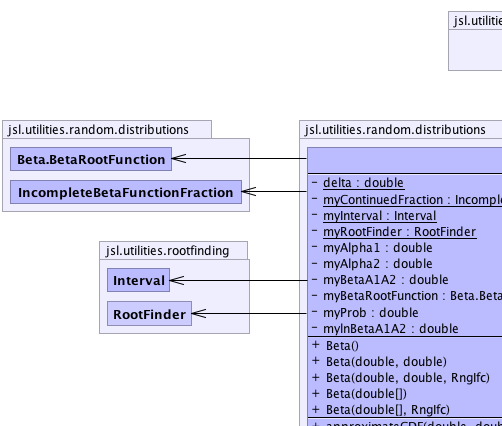
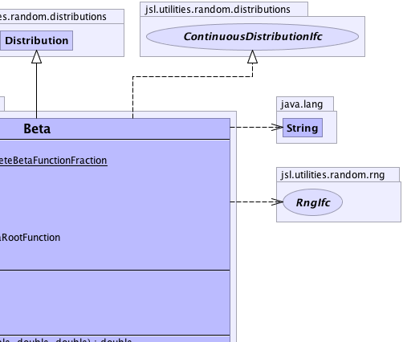
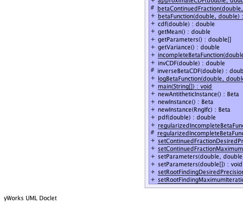
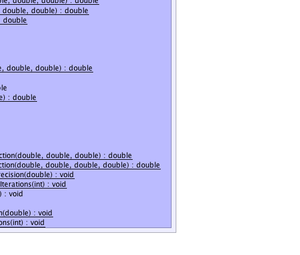

jsl.utilities.random.AbstractRandom
jsl.utilities.random.distributions.Distribution
jsl.utilities.random.distributions.Beta
jsl.utilities.random.AbstractRandom
jsl.utilities.random.distributions.Distribution
jsl.utilities.random.distributions.Beta
|
||||||||||
| PREV CLASS NEXT CLASS | FRAMES NO FRAMES | |||||||||
| SUMMARY: NESTED | FIELD | CONSTR | METHOD | DETAIL: FIELD | CONSTR | METHOD | |||||||||
java.lang.Object
public class Beta
|  |  |
|  |  |
| Nested Class Summary | |
|---|---|
private class |
Beta.BetaRootFunction
|
| Nested classes/interfaces inherited from class jsl.utilities.random.AbstractRandom |
|---|
AbstractRandom.RandomControls |
| Field Summary | |
|---|---|
private static double |
delta
|
private double |
myAlpha1
|
private double |
myAlpha2
|
private double |
myBetaA1A2
|
private Beta.BetaRootFunction |
myBetaRootFunction
|
private static IncompleteBetaFunctionFraction |
myContinuedFraction
|
private static Interval |
myInterval
|
private double |
mylnBetaA1A2
|
private double |
myProb
|
private static RootFinder |
myRootFinder
|
| Fields inherited from class jsl.utilities.random.distributions.Distribution |
|---|
myRNG |
| Fields inherited from class jsl.utilities.random.AbstractRandom |
|---|
myId, myName |
| Constructor Summary | |
|---|---|
Beta()
Creates a Beta with parameters 1.0, 1.0 |
|
Beta(double[] parameters)
Creates a beta with the supplied parameters |
|
Beta(double[] parameters,
RngIfc rng)
Creates a beta with the supplied parameters |
|
Beta(double alpha1,
double alpha2)
Creates a beta with the supplied parameters |
|
Beta(double alpha1,
double alpha2,
RngIfc rng)
Creates a beta with the supplied parameters |
|
| Method Summary | |
|---|---|
static double |
approximateCDF(double pp,
double qq,
double a,
double lnbeta)
Computes an approximation of the CDF for the Beta distribution Uses part of algorithm AS109, Applied Statistics, vol 26, no 1, 1977, pp 111-114 |
protected static double |
betaContinuedFraction(double x,
double a,
double b)
Computes the continued fraction for the incomplete beta function. |
static double |
betaFunction(double z1,
double z2)
Computes Beta(z1,z2) |
double |
cdf(double x)
Computes the CDF, has accuracy to about 10e-9 |
double |
getMean()
Returns the mean or expected value of a distribution |
double[] |
getParameters()
Gets the parameters |
double |
getVariance()
Returns the variance of the distribution if defined |
static double |
incompleteBetaFunction(double x,
double a,
double b)
Computes the regularized beta function at the supplied x Beta(x, a, b)/Beta(a, b) |
double |
invCDF(double p)
Inverts the CDF, has accuracy to about 10e-7 |
protected double |
inverseBetaCDF(double p)
Computes the inverse of the beta CDF at the supplied probability point using an initial approximation and a root finding technique |
static double |
logBetaFunction(double z1,
double z2)
The natural logarithm of Beta(z1,z2) |
static void |
main(java.lang.String[] args)
|
Beta |
newAntitheticInstance()
Returns a new instance that will supply values based on antithetic U(0,1) when compared to this distribution |
Beta |
newInstance()
Returns a new instance of the random source with the same parameters but an independent generator |
Beta |
newInstance(RngIfc rng)
Returns a new instance of the random source with the same parameters with the supplied RngIfc |
double |
pdf(double x)
Returns the f(x) where f represents the probability density function for the distribution. |
static double |
regularizedIncompleteBetaFunction(double x,
double a,
double b)
Computes the regularized incomplete beta function at the supplied x |
protected static double |
regularizedIncompleteBetaFunction(double x,
double a,
double b,
double lnbeta)
Computes the regularized incomplete beta function at the supplied x |
static void |
setContinuedFractionDesiredPrecision(double prec)
Sets the desired precision in the continued fraction expansion for the computation of the incompleteBetaFunction |
static void |
setContinuedFractionMaximumIterations(int maxIter)
Sets the maximum number of iterations in the continued fraction expansion for the computation of the incompleteBetaFunction |
void |
setParameters(double[] parameters)
Sets the parameters parameter[0] is alpha 1 parameter[1] is alhpa 2 |
void |
setParameters(double alpha1,
double alpha2)
Changes the parameters to the supplied values |
static void |
setRootFindingDesiredPrecision(double prec)
Sets the desired precision of the root finding algorithm in the CDF inversion computation |
static void |
setRootFindingMaximumIterations(int maxIter)
Sets the maximum number of iterations of the root finding algorithm in the CDF inversion computation |
| Methods inherited from class jsl.utilities.random.distributions.Distribution |
|---|
advanceToNextSubstream, cdf, complementaryCDF, getAntitheticOption, getAntitheticValue, getRandomNumberGenerator, getStandardDeviation, getValue, inverseContinuousCDFViaBisection, inverseContinuousCDFViaBisection, inverseDiscreteCDFViaSearchUp, resetStartStream, resetStartSubstream, setAntitheticOption, setRandomNumberGenerator, toString |
| Methods inherited from class jsl.utilities.random.AbstractRandom |
|---|
getId, getName, getSample, getSample, makeControls, setControls, setId, setName |
| Methods inherited from class java.lang.Object |
|---|
clone, equals, finalize, getClass, hashCode, notify, notifyAll, wait, wait, wait |
| Methods inherited from interface jsl.utilities.random.distributions.CDFIfc |
|---|
cdf, complementaryCDF |
| Methods inherited from interface jsl.utilities.random.SampleIfc |
|---|
getSample, getSample |
| Field Detail |
|---|
private static IncompleteBetaFunctionFraction myContinuedFraction
private static Interval myInterval
private static RootFinder myRootFinder
private static double delta
private double myAlpha1
private double myAlpha2
private double mylnBetaA1A2
private double myBetaA1A2
private double myProb
private Beta.BetaRootFunction myBetaRootFunction
| Constructor Detail |
|---|
public Beta()
public Beta(double alpha1,
double alpha2)
alpha1 - alpha2 - public Beta(double[] parameters)
parameters -
public Beta(double[] parameters,
RngIfc rng)
parameters - rng -
public Beta(double alpha1,
double alpha2,
RngIfc rng)
alpha1 - alpha2 - rng - | Method Detail |
|---|
public final Beta newInstance()
newInstance in interface NewInstanceIfcnewInstance in interface RandomIfcnewInstance in class Distributionpublic final Beta newInstance(RngIfc rng)
newInstance in interface RandomIfcnewInstance in class Distributionrng -
public final Beta newAntitheticInstance()
newAntitheticInstance in class Distribution
public final void setParameters(double alpha1,
double alpha2)
alpha1 - alpha2 - public final void setParameters(double[] parameters)
setParameters in interface ParametersIfcparameters - an array holding the parameterspublic final double getMean()
MeanIfc
getMean in interface MeanIfcpublic final double[] getParameters()
ParametersIfc
getParameters in interface ParametersIfcpublic final double getVariance()
VarianceIfc
getVariance in interface VarianceIfcpublic double cdf(double x)
cdf in interface CDFIfcx - the x value to be evaluated
public double invCDF(double p)
invCDF in interface CDFIfcp - the probability to invert to, must be in [0,1]
public final double pdf(double x)
PDFIfc
pdf in interface PDFIfcx - a double representing the value to be evaluated
public static final double betaFunction(double z1,
double z2)
z1 - z2 -
public static final double logBetaFunction(double z1,
double z2)
z1 - z2 -
public static final double incompleteBetaFunction(double x,
double a,
double b)
x - the point to be evaluateda - alpha 1b - alpha 2
public static final double regularizedIncompleteBetaFunction(double x,
double a,
double b)
x - the point to be evaluateda - alpha 1b - alpha 2
protected static final double regularizedIncompleteBetaFunction(double x,
double a,
double b,
double lnbeta)
x - the point to be evaluateda - alpha 1b - alpha 2lnbeta - the natural log of Beta(alpha1,alpha2)
protected static final double betaContinuedFraction(double x,
double a,
double b)
x - a - b -
protected final double inverseBetaCDF(double p)
p -
public static final double approximateCDF(double pp,
double qq,
double a,
double lnbeta)
pp - Alpha 1 parameterqq - Alpha 2 parametera - The point to be evaluatedlnbeta - The log of Beta(alpha1,alpha2)
public static final void setContinuedFractionDesiredPrecision(double prec)
prec - public static final void setContinuedFractionMaximumIterations(int maxIter)
maxIter - public static final void setRootFindingDesiredPrecision(double prec)
prec - public static final void setRootFindingMaximumIterations(int maxIter)
maxIter - public static void main(java.lang.String[] args)
|
||||||||||
| PREV CLASS NEXT CLASS | FRAMES NO FRAMES | |||||||||
| SUMMARY: NESTED | FIELD | CONSTR | METHOD | DETAIL: FIELD | CONSTR | METHOD | |||||||||